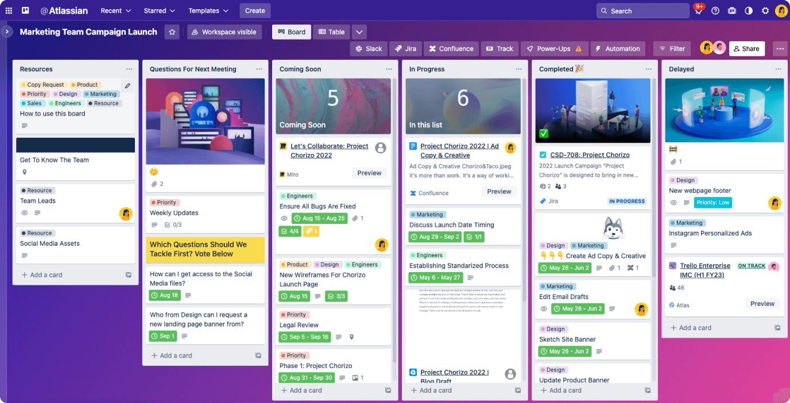

Semana 11
Clase presencial: El formato cambió de presencial a virtual debido a la enfermedad del profesor. En la sesión, se presentó la forma adecuada de presentar informes, mostrando los mejores trabajos, dos de los cuales fueron de nuestro grupo, realizados por Alejandra y Katherine. Gran parte de la clase se llevó a cabo en salas virtuales aleatorias para colaborar, compartir pantallas y brindar sugerencias para mejorar los trabajos de los compañeros. En mi caso, colaboré con Bryan, Dayanna y Katherine.
Clase virtual: Comenzamos el tercer promedio siguiendo las indicaciones del profesor. Ahora, debemos compartir semanalmente el enlace de nuestra bitácora digital y actualizar la página web del proyecto, siguiendo una estructura específica. Se presentó la metodología Scrum y el uso de Trello para una organización eficiente, destacada por el profesor. Cada miembro del equipo asumió tareas específicas; en mi caso, me comprometí con el diseño e impresión 3D de los sostenedores y el contorno del proyecto en MDF.